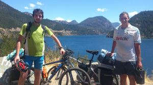
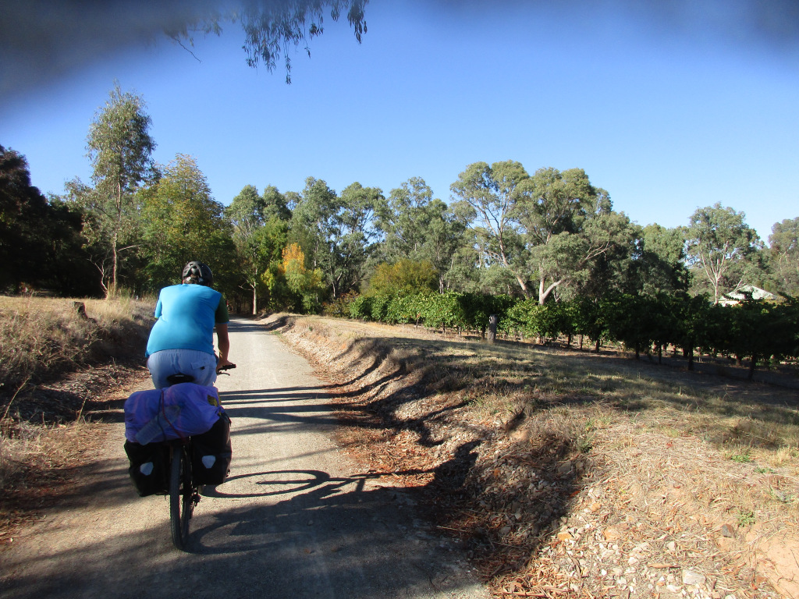
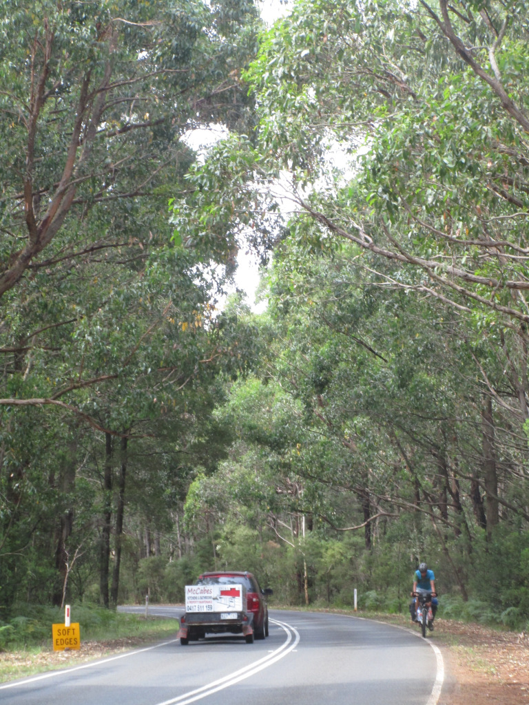
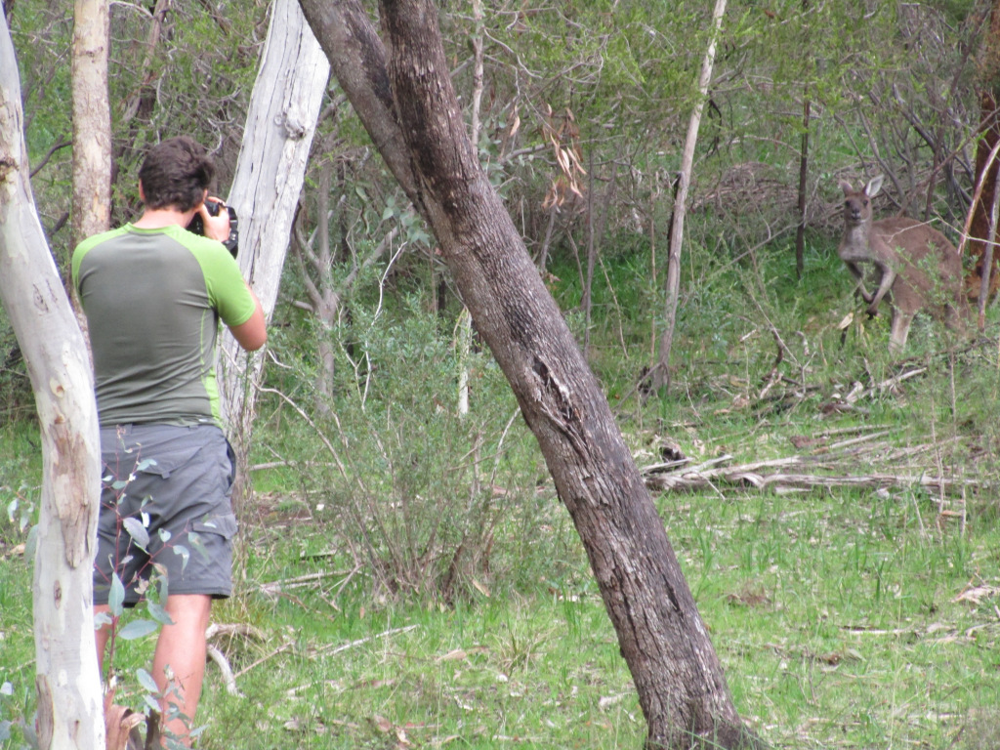
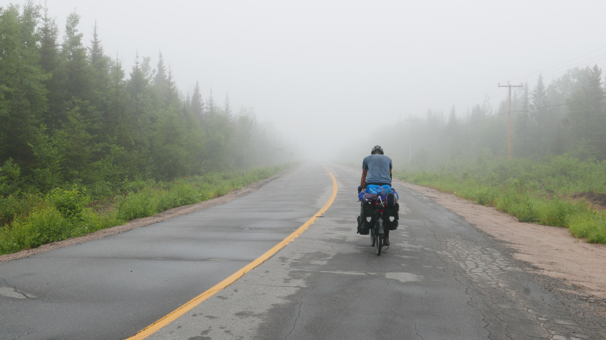

Ale

In the Ruta de los 7 Lagos with Nico
I was born in 1991 in Santiago de Chile. I was crazy about push-biking already very young and was riding everywhere in Santiago’s streets. When I came to live in France, his interest for bike touring got stronger. I would then ride the Loire valley, then when back in Chile, the road of the Seven Lakes, and the Austral road in Patagonia.
After working in Project Management in Australia for about 2 years, I moved to Canada with Ludi to plan for our first big bike trip!



